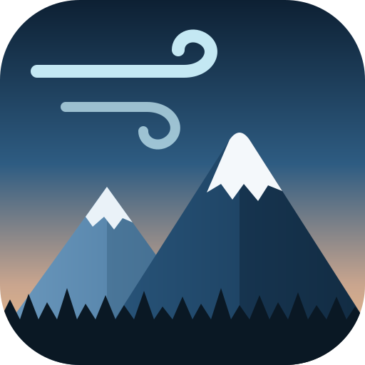

New snow
----in next 24h
Summit forecast
Snowfall by hour, next 48
48h--
72h--
7 days--

Rain below the freezing level line, snow above it.
--
Loading forecasts
Loading the latest report
Loading the National Weather Service forecast
Loading
National Weather Service, Pendleton office, forecast point at the summit of Mt. Bachelor.
Loading station data